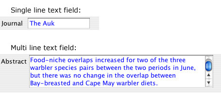
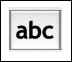
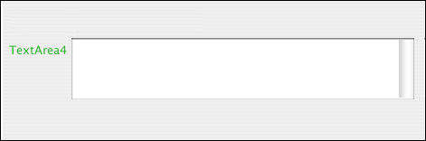
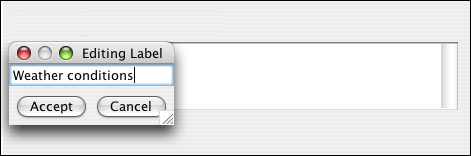
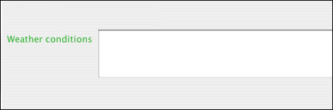

Text field widget
The text field widget is the most basic of all widgets. It is composed of a
label and an empty text box for entering user input with the keyboard.
Example:

In the Create Form tab, click the text field icon in the toolbar. Choose a
single line or multi line text field.

A new text field widget appears with a default label.

Double click on the default label, and in the dialog box that appears, enter
the label name.

The text field is now ready to accept keyboard in put in Enter Data mode.
